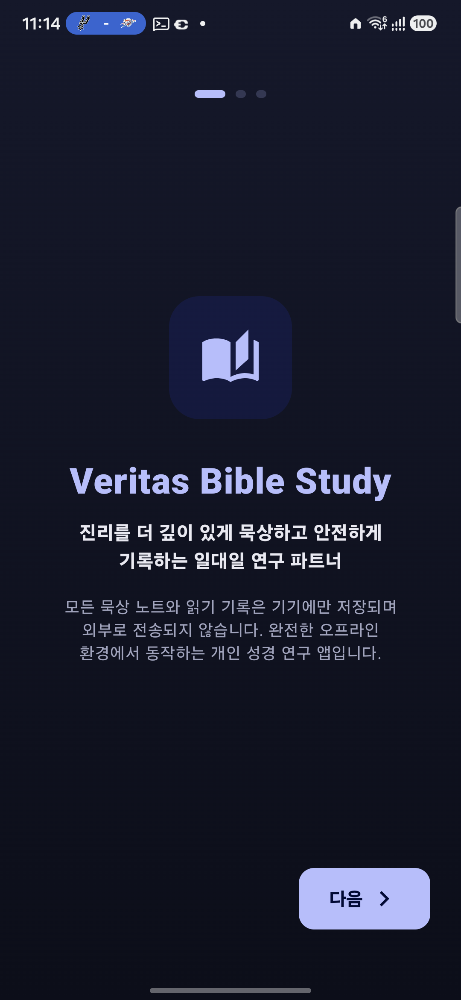
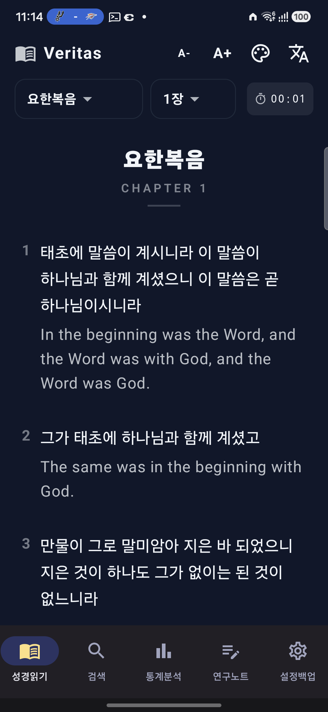
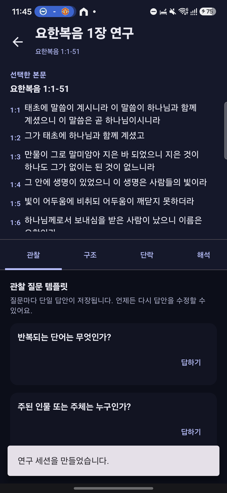
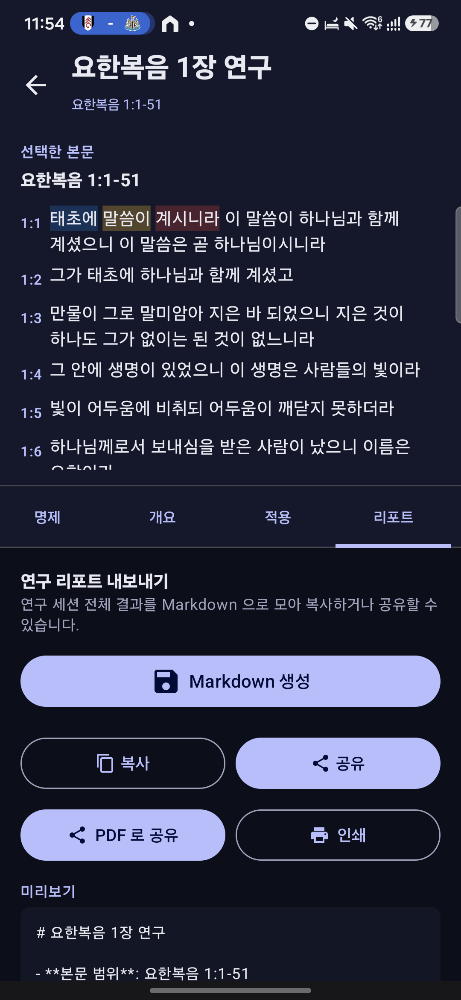

오프라인 성경 읽기부터 연구 리포트까지
앱의 중심은 과장된 기능보다 신뢰할 수 있는 읽기 경험입니다. 한국어 1910 개역과 영어 WEB 본문을 앱 안에 담고, 개인 데이터는 기기에 머물도록 설계했습니다.
오프라인 한·영 본문
31,105절 성경 본문을 번들로 제공해 네트워크 없이 읽기와 검색을 시작할 수 있습니다.
개인 노트와 암호화 백업
묵상 노트와 연구 데이터는 로컬에 저장하고, 사용자가 만든 백업은 비밀번호로 암호화합니다.
귀납적 성경연구
관찰, 마킹, 단락, 해석, 명제, 개요, 적용, Markdown/PDF 리포트 내보내기를 지원합니다.
앱 화면
첫 실행, 성경 리더, 연구 관찰, 리포트 내보내기 흐름을 실제 기기 스크린샷으로 확인할 수 있습니다.




개인정보 수집 없이, 기기 안에서
Veritas Bible은 계정, 위치, 연락처, 광고 ID를 수집하지 않으며 외부 분석 SDK를 포함하지 않습니다. Play Store 등록용 개인정보 처리 방침은 별도 페이지로 공개되어 있습니다.